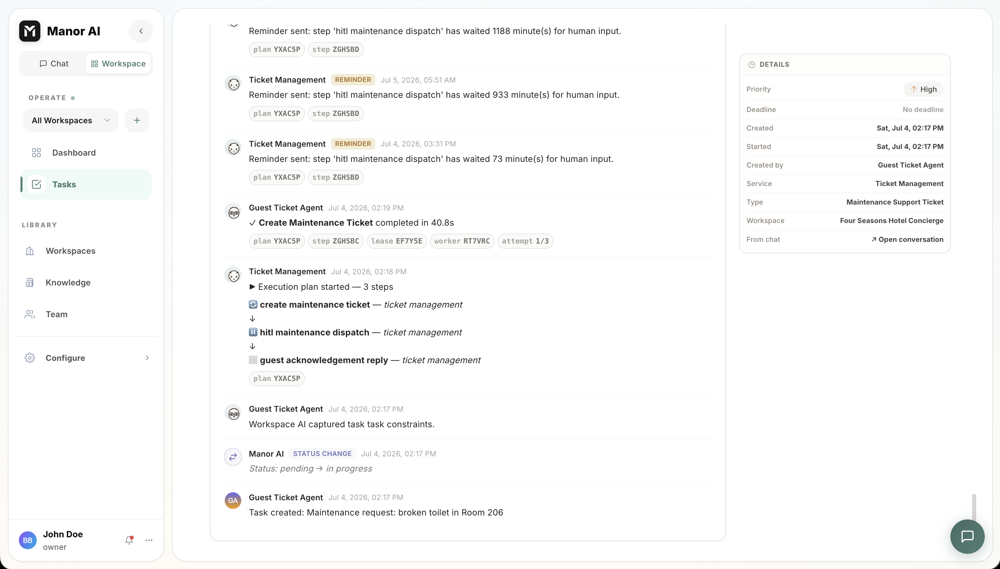

Agents
Agents are reusable AI workers with instructions, tool access, memory context, and runtime governance.
The Master Agent and Custom Agents
Every deployment has Manor AI, the master agent: the default assistant that handles open-ended chat, plans multi-step work, and delegates to specialist agents. When a task or message has no specific agent assigned, the master agent is the one working it.
Custom agents are specialist roles you define — a support concierge, a
research analyst, a bookkeeper. Create one from scratch (system prompt,
tools, knowledge) or generate a starting point from a plain-language
description with POST /api/v1/agents/generate.
In any chat input, type @ to route a message to a specific agent; without a
mention, messages go to the master agent. Agents mapped to a workspace
service handle that service's inbound work automatically.
What an Agent Contains
- System instructions and behavior rules.
- Tool bindings that define what the agent can call.
- Optional skills that package domain-specific instructions and workflows.
- Model preferences and routing behavior.
- Workspace and user context, plus memories it has accumulated.
Tool Scope
Agents should receive the smallest tool set that can complete their work. Tool
scope is enforced at runtime and surfaced in the UI so operators can understand
what an agent is allowed to do. Inspect any agent's effective tools with
GET /api/v1/agents/{agent_id}/tools.
Runtime Loop
During a conversation or task run, the agent can:
- Read context from the conversation, workspace, knowledge tools, and its memories.
- Call allowed tools.
- Delegate a sub-task to another agent and consume its result.
- Request human approval for sensitive actions.
- Produce user-visible results and artifacts.

Execution Evidence
Agent work should remain inspectable after the conversation moves on. Task runs show plan steps, step output, generated artifacts, waiting human input, and status changes so operators can understand what happened and resume work from a known state. Every scheduled or delegated run also records turns used, tools called, and token usage.


Where Agents Run
The same agent loop powers several surfaces:
| Surface | How the agent is invoked |
|---|---|
| Chat | Direct conversation, @-mentions, floating chat |
| Tasks | Assign a task to an agent; it works the task and reports in comments and the execution log |
| Workflows | An agent node runs the loop as one graph step |
| Automations | Scheduled jobs fire agent runs on cron |
| Channels | Inbound customer messages route to the mapped agent |
Good Agent Design
- Give agents clear ownership.
- Bind only necessary tools.
- Prefer explicit HITL requirements for irreversible actions.
- Keep instructions short enough to audit.
- Test agents against real workflows before broad use.